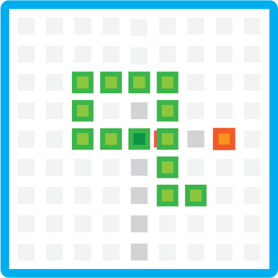

Deep Q Network in Non-Deterministic Simulation
This is a snake agent based simulation, trying to avoid the dangers of colliding into itself or the walls while trying to get the highest possible score from eating apples.

Redlab CMS
This is a content management system that holds documents and articles of different type that talk about IoT devices and How To's.